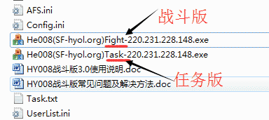
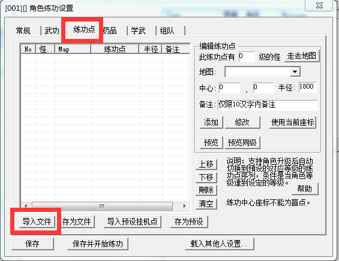
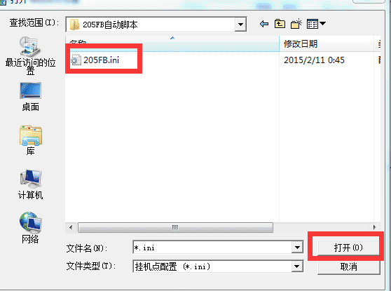
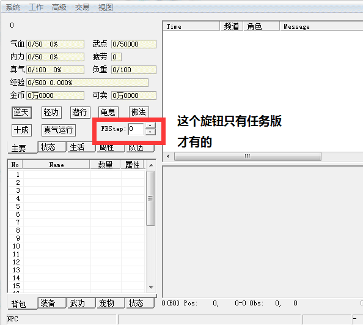
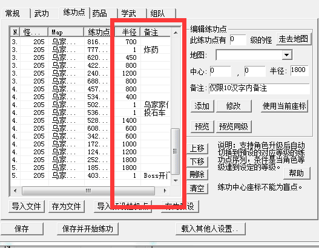
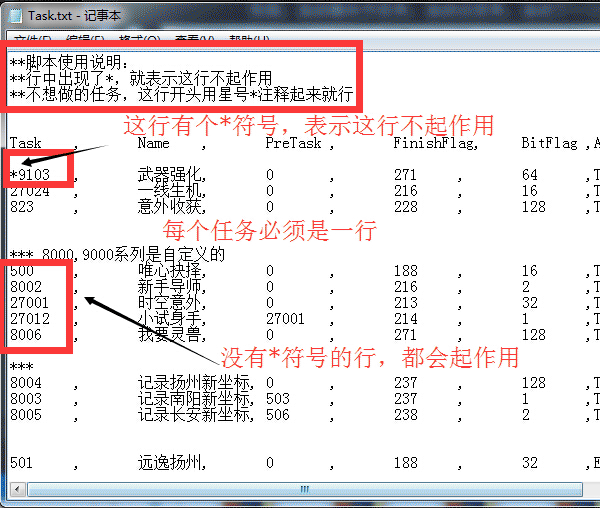
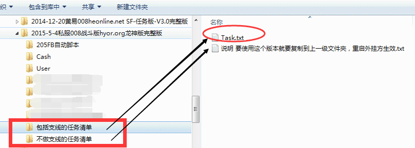
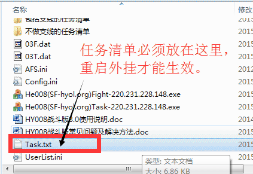

当然，也可以自行修改脚本，删除一些挂机点， 这个因人而异，众口难调，请自行修改。
半径=1，是自动与NPC对话，坐标应设置为NPC的坐标
战斗点设置的半径、坐标自行决定，和战斗版设置是一样的，但不能=1。
外挂会在当前挂机点5秒忠无怪后自动去下一个挂机点，战斗或对话或开门。
所以，建议把挂机点范围弄的尽可能的小，否则会走很多冤枉路，浪费时间。
强烈建议：只是删除不需要的挂机点，不要自己去添加，容易搞错，修改前自己做好备份。
自动做任务： 只自动支持到130级主线任务。在task.txt中把已经支持的任务清单都列出来了，不想做的任务可以自己修改，后文详述。
自动FB的功能：不是所有FB都可以自动的，目前只支持205FB的自动，其他FB要自动的需要自己编写挂机点脚本。
| 步骤 | 图解操作 | 说明 |
|---|---|---|
| 1 |
 | 自动FB必须启动任务版(Task)才行，战斗版不含此功能 |
| 2 |
|
手动进入FB地图后，在外挂菜单中“战斗设置”。 |
| 3 |
 | “战斗设置”->“练功点”->“导入文件”。 |
| 4 |
 | 选择”205FB.ini”导入。 |
| 5 |
|
菜单->”开始战斗”，即可。 |
| 6 |
 | 因FB怪太多，一般都打不完，所以，可用左图中的FBStep旋钮来跳过一些不需要的挂机点，
可节约不少时间， 当然，也可以自行修改脚本，删除一些挂机点， 这个因人而异，众口难调，请自行修改。 |
| 7 |
 | 自行修改时注意规则：如图： 半径=1，是自动与NPC对话，坐标应设置为NPC的坐标 战斗点设置的半径、坐标自行决定，和战斗版设置是一样的，但不能=1。 外挂会在当前挂机点5秒忠无怪后自动去下一个挂机点，战斗或对话或开门。 所以，建议把挂机点范围弄的尽可能的小，否则会走很多冤枉路，浪费时间。 强烈建议：只是删除不需要的挂机点，不要自己去添加，容易搞错，修改前自己做好备份。 |
| 步骤 | 图解操作 | 说明 |
|---|---|---|
| 1 |
自动FB必须启动任务版(Task)才行，战斗版不含此功能 | |
| 2 |
|
菜单->”开始战斗”，即可。外挂会自动根据当前状态，判断是否有可接任务，自己去做。
包括：自动接关卡任务，自动还任务，自动下一个任务。 |
| 3 |
 |
任务版用户可同时使用任务版主程序，也可使用战斗版主程序，根据你做任务的完成情况自己选择，比如一两天之内无任务可做，建议用战斗版，更稳定。 |
| 4 |
 | 所有任务都在Task.txt中写死了， 星号'*'开头，表示这一行的任务被忽略了。要做的任务这行就不能有星号注释'*', 有些任务是有前置任务的，当你自己修改这个文件时，一定要注意任务的前后置关系。 修改Task.txt后，要重启外挂才能生效。 |
| 5 |
  |
当前为了方便不懂的朋友不会设置task.txt，已经把所有支线任务全部注释了，就是不会做任何支线任务，除非你接了task.txt中已经存在的任务（无论是否被注释的） |